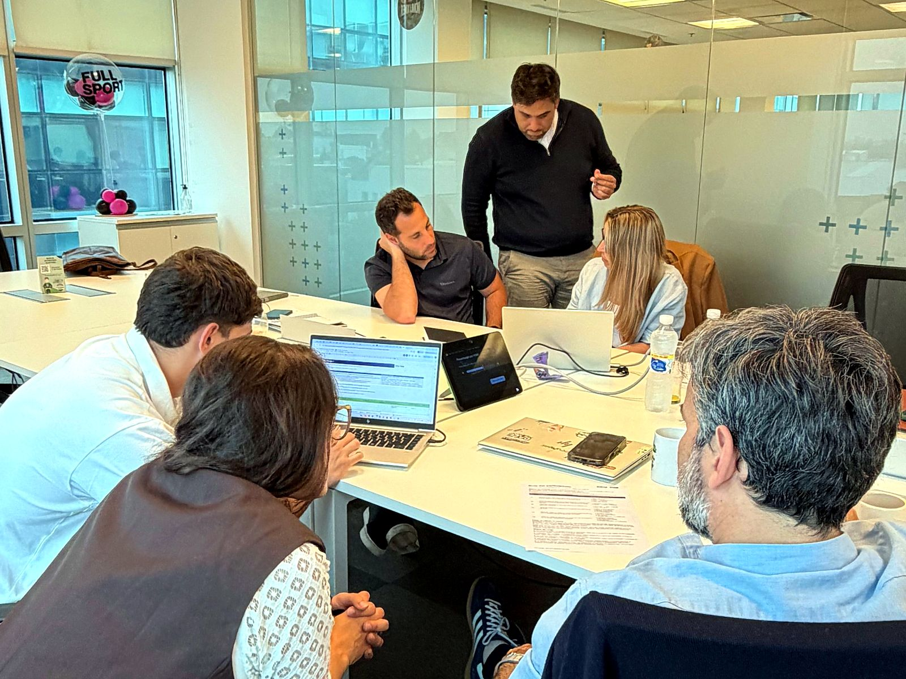
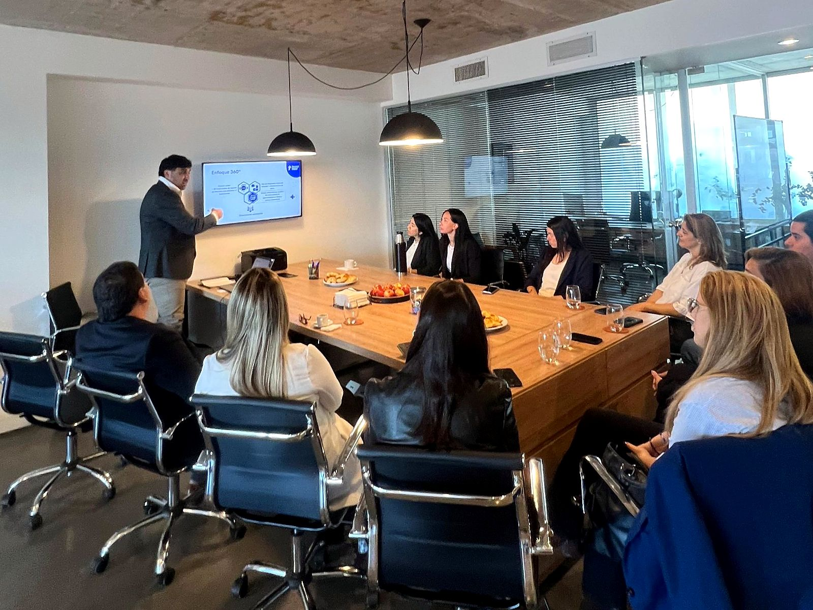
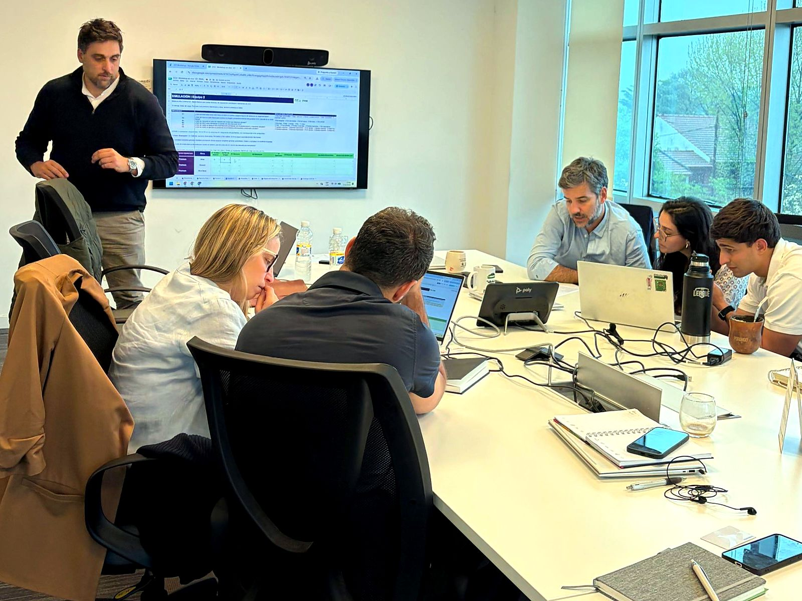
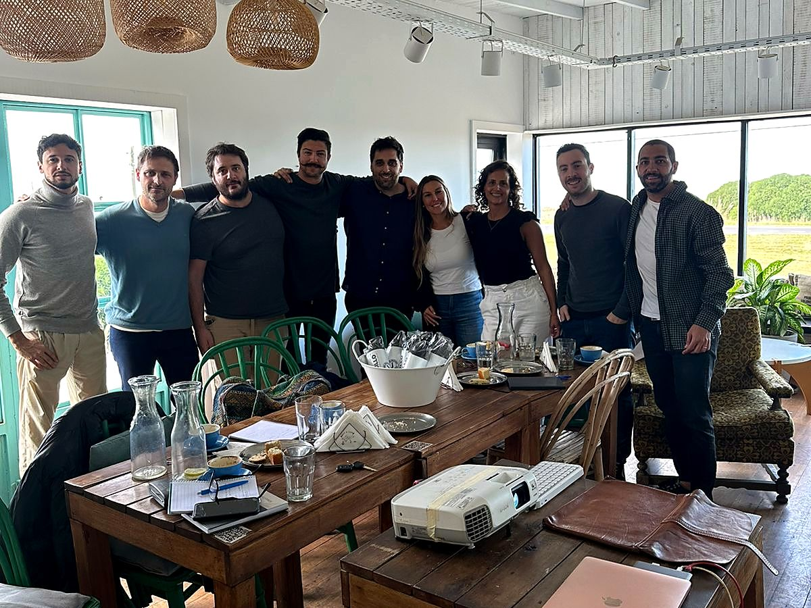

Consultor en estrategia y transformación comercial
Julio Cardozo Ferrer
Hago que las empresas de consumo masivo vendan más con lo que ya tienen.
- Route to MarketCanales y distribuidores que llegan a más clientes
- Trade MarketingGanar en la góndola y en el punto de venta
- Reestructuración comercialEquipos, procesos y metas que se sostienen
Fundador y director de STM LATAM, con proyectos en multinacionales, pymes y distribuidoras de 5 países de América Latina.
En números
Resultados que respaldan el método
Proyectos con impacto medible en multinacionales, pymes y redes de distribución de cinco países.
tiendas activadas en una sola activación tecnológica
proyectos implementados en multinacionales y pymes
clientes que vuelven a elegirnos
marcas líderes, de CCU a Unilever
puntos de venta censados en 90 días, con 33 censistas
países: Argentina, Chile, México, Ecuador y Paraguay
Plata POPAI 2018, mejor promoción en el punto de venta de Latinoamérica
en el área comercial, 9 al frente de STM
¿Cuál de estos problemas tiene hoy tu compañía?
Elegí el que más se parece a tu situación y mirá cómo lo resolvemos y qué queda instalado en tu equipo.
Captura de valor
El valor que se escapa entre la estrategia y la góndola
De cada 100 de venta potencial, muchas compañías capturan la mitad. El resto se pierde en cinco fugas. Elegí una fuga y cerrala para ver cómo crece lo que capturás.
Esquema conceptual con valores de ejemplo. Las proporciones varían en cada compañía.
¿Cuánto valor están dejando de capturar las empresas con las capacidades que ya tienen?
La pregunta con la que empieza cada proyectoSobre mí
Estrategia comercial que se ejecuta
Soy consultor en estrategia y transformación comercial y fundador de STM LATAM. Resuelvo los problemas estructurales que impiden a una compañía capturar valor en sus canales: Route to Market, Trade Marketing, redes de distribuidores y reestructuración comercial, en canal moderno, tradicional y Food Service.
Trabajo con método y en profundidad, del diagnóstico a la implementación, y me apoyo en datos, tableros y tecnología para que cada decisión tenga un número detrás.
Cada proyecto tiene que dejar capacidades instaladas: procesos que se sostienen, equipos que evolucionan e indicadores que se usan.
Modelo de madurez comercial
Cada compañía está en un escalón distinto
Tres niveles evolutivos, cada uno con tres pasos. Mirá cómo se ve tu compañía hoy en cada nivel, qué trabajamos y a dónde llegás.
Marco de trabajo
Un sistema evolutivo de soluciones
Seis frentes en dos mitades: puertas afuera, hacia los canales, los clientes y el shopper; y puertas adentro, en la organización. En el centro, el cliente y la captura de valor.
Puertas afueraPuertas adentro
Tocá una porción de la rueda para ver qué incluye
Servicios
Lo que resolvemos en los canales
Route to Market y distribuidores
Modelos de distribución y servicio, segmentación, evaluación y profesionalización de la red.
Tactical Trade Marketing
Canal moderno, tradicional y Food Service. Foto de éxito, medición de ejecución, censos y activaciones.
Estructura y procesos comerciales
Reestructuraciones, modelos de gestión, playbooks, esquemas de remuneración e indicadores.
Tecnología aplicada
Tableros de control, e-commerce B2B con distribuidores y predicción de resultados.
Route to Market
Trabajamos cada punto de contacto, del fabricante al shopper
La estrategia se gana o se pierde en el recorrido entre la compañía y la góndola. Pasá el mouse por cada eslabón.
Compañía
Estrategia y modelo comercial
Distribuidor
Red de socios estratégicos
Fuerza de ventas
Preventa, supervisión y trade
Punto de venta
Góndola, almacén y gastronomía
Shopper
Decisión de compra
Metodología
Cinco etapas, un entregable concreto en cada una
De la alineación inicial al modelo de sostenibilidad, el módulo que deja la consultoría instalada en tu equipo. Dale play.
Cómo trabajamos, en 30 segundos
Cinco etapas, del prework al modelo de sostenibilidad
Casos
Proyectos que dejaron capacidades instaladas
Por confidencialidad no nombramos a los clientes. Sí contamos el problema, lo que hicimos y lo que quedó.
Herramientas propias
Decisiones con datos, no con intuición
Dos de los modelos que usamos en STM LATAM para que cada decisión comercial tenga un número detrás.
Tu distribuidor ideal existe
Puntuamos a cada socio en ocho pilares con indicadores objetivos y trazamos el camino hasta el estándar ideal.
Valores de ejemplo con fines ilustrativos.
Ver antes para corregir antes
El problema no es medir: es medir tarde. Con medición continua en el punto de venta, las señales aparecen dentro del mismo ciclo.
En acción
Nos apasiona trabajar en equipo
Workshops, pilotos e implementaciones codo a codo con los equipos de nuestros clientes. No entregamos un informe y nos vamos: construimos las soluciones en la mesa de trabajo y las llevamos a la calle, con el equipo.




La receta STM
Todo lo que sabemos, en una sola mezcla
Datos, Route to Market, Trade Marketing, procesos, equipos y tecnología, más la experiencia de 12 industrias y 5 países. Dale a licuar y mirá qué sale.
8 ingredientes listos
Crecimiento con método
Un plan ejecutable, un equipo que sabe qué hacer y resultados que se miden. Así se ve la consultoría cuando todo se mezcla bien.
- Datos y tecnología: decisiones con un número detrás.
- Route to Market y Trade Marketing: la estrategia llega a la góndola.
- Procesos y equipos: capacidades que quedan instaladas.
- 12 industrias y 5 países: soluciones probadas que aceleran a tu compañía.
Videos y notas
Ideas para ejecutar mejor, contadas desde adentro de los proyectos
Proyectos, herramientas y lanzamientos de STM LATAM, contados en menos de un minuto.
Hablemos de tu próximo proyecto comercial
Si querés trabajar una idea con tu equipo, armamos un workshop para analizarla juntos.
- jcardozo@stmlatam.com
- +54 9 11 2374-5576
- linkedin.com/in/julio10
- Consultora
- stmlatam.com